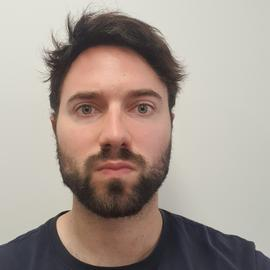
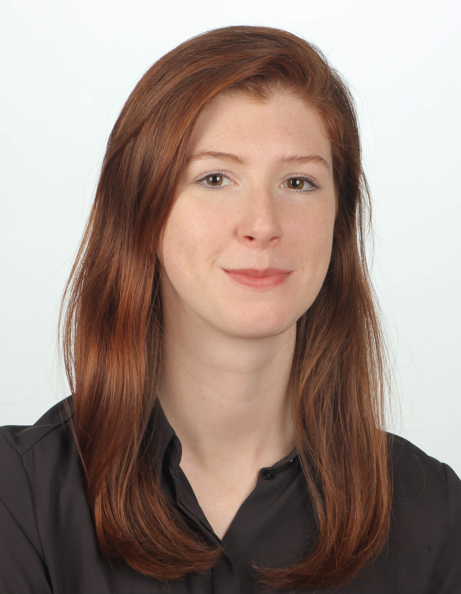
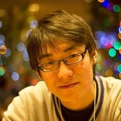
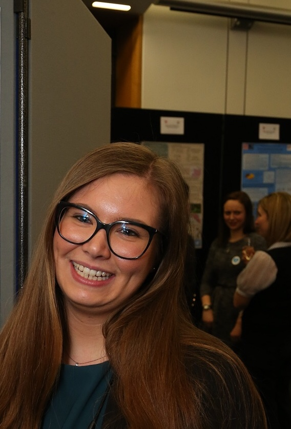
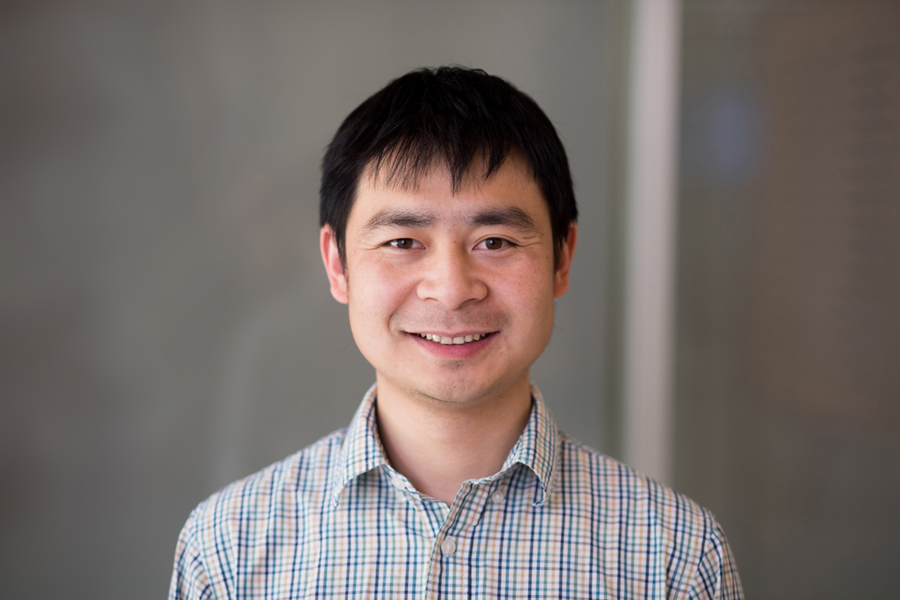

Nikolas Nüsken
King’s College London
Archive / 2023
The inaugural one-day workshop surveyed gradient-flow approaches to sampling, inference and learning, including Langevin dynamics and Wasserstein gradient flows, with applications in Bayesian posterior sampling, variational inference, generative modelling and deep-learning optimisation.
Published recording
The complete workshop recording is published below.
Six invited talks
The programme brought together researchers working in probability, statistics, machine learning and applied mathematics.
King’s College London

University of Cambridge

ENSAE / CREST

University of Bristol

ENSAE

University of Texas at Austin
Friday 1 December
All times are as published in the original event listing. Anna Korba and Qiang Liu presented online.
Talk descriptions
Full abstracts from the published event record.
Sampling from a target measure whose density is only known up to a normalization constant is a fundamental problem in computational statistics and machine learning. We present a new optimization-based method for sampling called mollified interaction energy descent (MIED), that minimizes an energy on probability measures called mollified interaction energie (MIE).
The latter converges to the chi-square divergence with respect to the target measure and the gradient flow of the MIE agrees with that of the chi-square divergence, as the mollifiers approach Dirac deltas. Optimizing this energy with proper discretization yields a practical first-order particle-based algorithm for sampling in both unconstrained and constrained domains. We show the performance of our algorithm on both unconstrained and constrained sampling in comparison to state-of-the-art alternatives.
Many of the most powerful methods in sampling, optimisation and inference, such as Hamiltonian Monte Carlo, accelerated gradient descent, and kernel methods, implicitly take advantage of geometry. How these methods exploit geometry, however, is often mysterious which obscures their foundations and frustrates productive generalisations.
In this talk we scrutinise function and measure-driven flows to unravel their rich canonical geometric structure, which allows us, for instance, to characterise measure-constraints preserving diffusions and understand the foundations of Hamiltonian Monte Carlo and reproducing kernel methods. Along this journey we highlight connections with core areas of mathematics, such as homology, cohomology, Gerstenhaber and Von Neumann algebras, deRham currents, Poisson and Riemannian geometry.
We consider the problem of learning a transport mapping between two distributions that are only observed through unpaired data points. This problem provides a unified framework for a variety of fundamental tasks in machine learning: generative modeling is about transforming a Gaussian (or other elementary) random variable to realistic data points; domain transfer concerns with transferring data points from one domain to another; optimal transport (OT) solves the more challenging problem of finding a “best” transport map that minimizes certain transport cost.
Unfortunately, despite the unified view, there lacks an algorithm that can solve the transport mapping problem efficiently in all settings. The existing algorithms need to be developed case by case, and tend to be complicated or computationally expensive.
In this talk, I will show you that the problem can be addressed with a pretty simple algorithm. This algorithm, called rectified flow, learns an ordinary differential equation (ODE) model to transfer between the two distributions by following straight paths as much as possible. The algorithm only requires solving a sequence of nonlinear least squares optimization problems, which guarantees to yield monotonically non-increasing couplings with respect to all convex transport costs.
The straight paths are special and preferred because they are the shortest paths between two points, and can be simulated exactly without time discretization, yielding computationally efficient models. In practice, the ODE models learned by our method can generate high quality images with a single discretization step, which is a significant speedup over existing diffusion generative models. Moreover, with a proper modification, our method can be used to solve the optimal transport problems on high dimensional continuous distributions, a challenging problem for which no well accepted efficient algorithms exist.
Stein Variational Gradient Descent (SVGD) can transport particles along trajectories that reduce the KL divergence between the target and particle distribution but requires the target score function to compute the update. We introduce a new perspective on SVGD that views it as a local estimator of the reversed KL gradient flow. This perspective inspires us to propose new estimators that use local linear models to achieve the same purpose.
The proposed estimators can be computed using only samples from the target and particle distribution without needing the target score function. Our proposed variational gradient estimators utilize local linear models, resulting in computational simplicity while maintaining effectiveness comparable to SVGD in terms of estimation biases. Additionally, we demonstrate that under a mild assumption, the estimation of high-dimensional gradient flow can be translated into a lower-dimensional estimation problem, leading to improved estimation accuracy. We validate our claims with experiments on both simulated and real-world datasets.
Integral equations model many phenomena in applied mathematics and engineering ranging from deconvolution to optimal control. Classical approaches rely on discretisation of the solution using basis functions and scale poorly as the dimension increases.
In this talk I will show that one can exploit Wasserstein gradient flows to build interacting particle methods which, under suitable conditions, provide good Monte Carlo approximations of the solution of two classes of integral equations. The error incurred by these approximations decays at the usual rate of N−1/2, suggesting that these approaches can be employed to solve high dimensional integral equations.
The theory of gradient flows on the space of probability distributions provides a principled framework for designing and analysing Bayesian inference methodologies: in the long-time limit, the distribution of a (possibly interacting) particle system approaches the target posterior.
In this talk, I will discuss recent advances that aim at constructing controlled dynamical schemes that reach the target distribution in finite time. Although not gradient flows in the strict sense, these developments rest on the lessons learned from the analysis of gradient flows, and in particular on their geometric underpinnings.